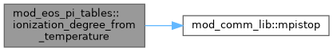
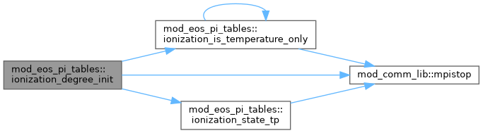
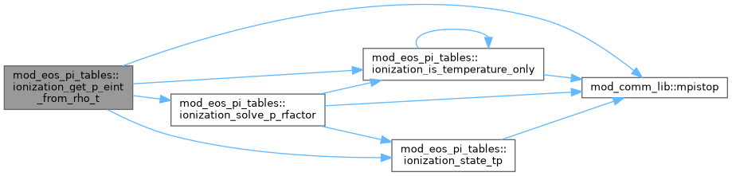
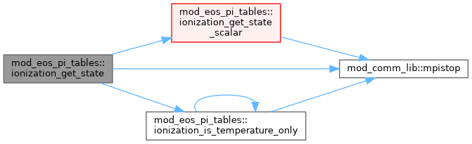
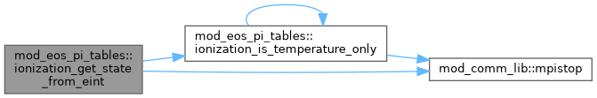
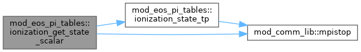
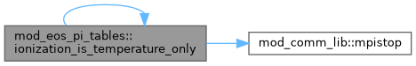
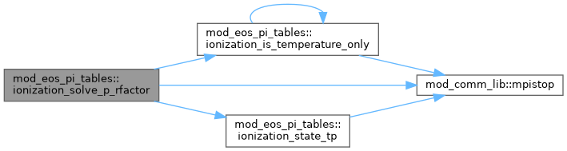
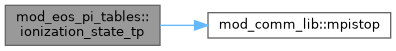

|
MPI-AMRVAC 3.2
The MPI - Adaptive Mesh Refinement - Versatile Advection Code (development version)
|
PI (partial-ionisation) ionisation-degree backend for the eos% family. More...
Functions/Subroutines | |
| subroutine, public | ionization_degree_init (he_abundance, rfactor_norm, table_name, include_energy) |
| subroutine, public | ionization_degree_from_temperature (ixil, ixol, te, iz_h, iz_he) |
| Array interface for T -> ionization degrees. Used by get_Rfactor_tonly_PI (mod_eos_PI) to build the no-energy chromosphere/flare R-factor block. | |
| subroutine, public | ionization_get_state_scalar (rho, p, t, rfactor, iz_h, iz_he) |
| subroutine, public | ionization_state_tp (t, p, rfactor, iz_h, iz_he) |
| subroutine, public | ionization_solve_p_rfactor (rho, t, p, rfactor) |
| subroutine, public | ionization_get_state (ixil, ixol, rho, p, t, rfactor, iz_h, iz_he) |
| subroutine, public | ionization_get_rfactor_from_temperature (t, rfactor) |
| logical function, public | ionization_is_temperature_only () |
| subroutine, public | ionization_get_state_from_eint (rho, eint, invgam, t, p, rfactor, iz_h, iz_he) |
| subroutine, public | ionization_get_p_eint_from_rho_t (rho, t, invgam, p, eint, rfactor, iz_h, iz_he) |
| subroutine, public | ionization_get_csound2_t (t, invgam, csound2) |
PI (partial-ionisation) ionisation-degree backend for the eos% family.
The physics library behind mod_eos_PI (the eos_type='PI' adapter): given the thermodynamic state it returns the hydrogen/helium ionisation degrees, the R-factor (mean inverse molecular weight) and – in energy mode – the ionisation energy. Standalone: depends only on mod_global_parameters / mod_constants / mod_comm_lib, never on mod_eos*, so eos% -> ionisation is acyclic. The analogue for PI of mod_eos_LTE_tables for LTE.
Three interchangeable tables (eospi_table), selected at init: chromosphere – T-only H I/H fraction, Carlsson & Leenaarts (2012, A&A 539 A39) flare – T-only H I/H fraction, Hong, Carlsson & Ding (2022, A&A 661 A77) prominence – (T,p) H ionisation, Heinzel et al. (2015, A&A 579 A16) + Gunar et al. (2025, A&A 699 A89); model A, side illumination, L=500 km. Hydrogen ionisation is tabulated (interpolated to a 4000-point fine grid); helium is a semi-analytic Saha-like fit. The R-factor is R = (1 + iz_H + A_He*(1 + iz_He*(1 + iz_He))) / Rfactor_norm, with Rfactor_norm = 2 + 3*A_He set by the adapter so R -> 1 at full ionisation under the FI code-unit normalisation. Energy mode folds 13.6 eV per ionised H into eint. The map Y(T) = R(T)*T = p/rho is monotonic, so (rho,p) -> T inverts by bisection (T-only) or pressure-bisection (prominence); energy mode inverts eint -> T by Newton.
Public API: ionization_degree_init (once, after units) + the state-query routines consumed by mod_eos_PI (get_state[_scalar], state_Tp, solve_p_Rfactor, get_state_from_eint, get_p_eint_from_rho_T, get_eps_derivative_T, get_csound2_T, the predicates and the legacy degree-from-temperature shim).
| subroutine, public mod_eos_pi_tables::ionization_degree_from_temperature | ( | integer, intent(in) | ixi, |
| integer, intent(in) | l, | ||
| integer, intent(in) | ixo, | ||
| l, | |||
| double precision, dimension(ixi^s), intent(in) | te, | ||
| double precision, dimension(ixo^s), intent(out) | iz_h, | ||
| double precision, dimension(ixo^s), intent(out) | iz_he | ||
| ) |
Array interface for T -> ionization degrees. Used by get_Rfactor_tonly_PI (mod_eos_PI) to build the no-energy chromosphere/flare R-factor block.
Definition at line 460 of file mod_eos_PI_tables.t.

| subroutine, public mod_eos_pi_tables::ionization_degree_init | ( | double precision, intent(in) | he_abundance, |
| double precision, intent(in) | rfactor_norm, | ||
| character(len=*), intent(in), optional | table_name, | ||
| logical, intent(in), optional | include_energy | ||
| ) |
Definition at line 209 of file mod_eos_PI_tables.t.

| subroutine, public mod_eos_pi_tables::ionization_get_csound2_t | ( | double precision, intent(in) | t, |
| double precision, intent(in) | invgam, | ||
| double precision, intent(out) | csound2 | ||
| ) |
Definition at line 1210 of file mod_eos_PI_tables.t.
| subroutine, public mod_eos_pi_tables::ionization_get_p_eint_from_rho_t | ( | double precision, intent(in) | rho, |
| double precision, intent(in) | t, | ||
| double precision, intent(in) | invgam, | ||
| double precision, intent(out) | p, | ||
| double precision, intent(out) | eint, | ||
| double precision, intent(out) | rfactor, | ||
| double precision, intent(out), optional | iz_h, | ||
| double precision, intent(out), optional | iz_he | ||
| ) |
Definition at line 1132 of file mod_eos_PI_tables.t.

| subroutine, public mod_eos_pi_tables::ionization_get_rfactor_from_temperature | ( | double precision, intent(in) | t, |
| double precision, intent(out) | rfactor | ||
| ) |
Definition at line 984 of file mod_eos_PI_tables.t.
| subroutine, public mod_eos_pi_tables::ionization_get_state | ( | integer, intent(in) | ixi, |
| integer, intent(in) | l, | ||
| integer, intent(in) | ixo, | ||
| l, | |||
| double precision, dimension(ixi^s), intent(in) | rho, | ||
| double precision, dimension(ixi^s), intent(in) | p, | ||
| double precision, dimension(ixi^s), intent(out) | t, | ||
| double precision, dimension(ixi^s), intent(out) | rfactor, | ||
| double precision, dimension(ixi^s), intent(out), optional | iz_h, | ||
| double precision, dimension(ixi^s), intent(out), optional | iz_he | ||
| ) |
Definition at line 714 of file mod_eos_PI_tables.t.

| subroutine, public mod_eos_pi_tables::ionization_get_state_from_eint | ( | double precision, intent(in) | rho, |
| double precision, intent(in) | eint, | ||
| double precision, intent(in) | invgam, | ||
| double precision, intent(out) | t, | ||
| double precision, intent(out) | p, | ||
| double precision, intent(out) | rfactor, | ||
| double precision, intent(out), optional | iz_h, | ||
| double precision, intent(out), optional | iz_he | ||
| ) |
Definition at line 1110 of file mod_eos_PI_tables.t.

| subroutine, public mod_eos_pi_tables::ionization_get_state_scalar | ( | double precision, intent(in) | rho, |
| double precision, intent(in) | p, | ||
| double precision, intent(out) | t, | ||
| double precision, intent(out) | rfactor, | ||
| double precision, intent(out), optional | iz_h, | ||
| double precision, intent(out), optional | iz_he | ||
| ) |
Definition at line 556 of file mod_eos_PI_tables.t.

| logical function, public mod_eos_pi_tables::ionization_is_temperature_only |
Definition at line 991 of file mod_eos_PI_tables.t.

| subroutine, public mod_eos_pi_tables::ionization_solve_p_rfactor | ( | double precision, intent(in) | rho, |
| double precision, intent(in) | t, | ||
| double precision, intent(out) | p, | ||
| double precision, intent(out) | rfactor | ||
| ) |
Definition at line 646 of file mod_eos_PI_tables.t.

| subroutine, public mod_eos_pi_tables::ionization_state_tp | ( | double precision, intent(in) | t, |
| double precision, intent(in) | p, | ||
| double precision, intent(out) | rfactor, | ||
| double precision, intent(out), optional | iz_h, | ||
| double precision, intent(out), optional | iz_he | ||
| ) |
Definition at line 613 of file mod_eos_PI_tables.t.
